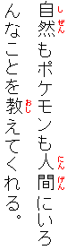
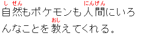

Intended audience: jeder, der von Ruby gehört hat und mehr darüber erfahren möchte
Was ist „Ruby“?
Der Begriff Ruby bezeichnet eine bestimmte Art von Annotationen. Üblicherweise wird Ruby in ostasiatischen Schriften verwendet, um die Aussprache von unklaren Zeichen oder Zeichen, die dem Leser womöglich nicht geläufig sind, anzugeben. Es wird z.B. oft in Lehrmaterialien und Texten für Kinder verwendet. Machmal wird es auch verwendet, um Informationen zur Bedeutung anzugeben.
Im Japanischen, wo Ruby Furigana genannt wird, stehen phonetische Transkriptionen üblicherweise in Hiragana über horizontal geschriebenem Text bzw. rechts von vertikal geschriebenem Text.
Beispiele für horizontal und vertikal geschriebenen Text unten und rechts. Anmerkung: Das Ruby in den Beispielen auf dieser Seite ist nur zur Verdeutlichung rot hervorgehoben – normalerweise ist es in derselben Farbe wie der Text.


Semantische Information (Information zur Bedeutung) wird üblicherweise unter horizontal geschriebenem Text bzw. links von vertikal geschriebenem Text angegeben.
Obwohl Ruby im Japanischen üblicherweise in Hiragana geschrieben ist, trifft man gelegentlich auch auf Annotationen in Kanji, Katakana oder lateinischen Buchstaben.
In Taiwan wird Zhuyin (Bopomofo) verwendet, um die Aussprache von traditionellem Chinesisch anzugeben. Die Annotation steht aber nicht über dem Text, sondern vertikal rechts neben den jeweiligen Zeichen, egal ob der Text vertikal oder horizontal geschrieben ist.
Zum Beispiel:
Ruby kann auch für nicht-asiatische Annotationen verwendet werden und um zwischen Zeilen geschriebenen Text zu ermöglichen.
Der Begriff Ruby stammt aus der Druckersprache von der gleichnamigen Schriftgröße (5 Punkt).
Ruby wird in Markup unterstützt durch Ruby-Annotationen, einer W3C-Empfehlung und Teil von XHTML 1.1 seit Mai 2001. Zum Stylen von Ruby dient das CSS3-Ruby-Modul (gegenwärtiger Status: Candidate Recommendation).
Zur Unterstützung von Ruby in Browsern siehe den Abschnitt Implementation von Ruby im Tutorial Ruby: Markup und Styling.
Informationen zu Ruby im Buch CJKV Information Processing von Ken Lunde (ISBN 1-56592-224-7), insbesondere Kapitel 6 und 7